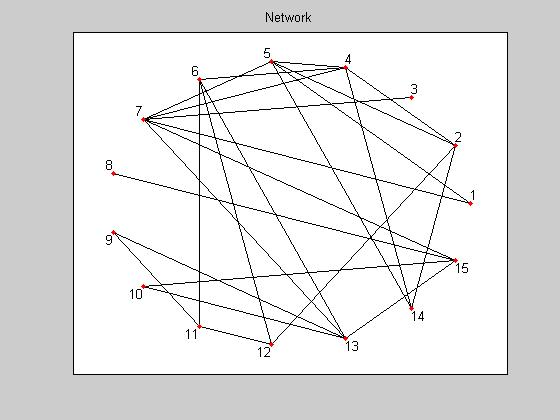
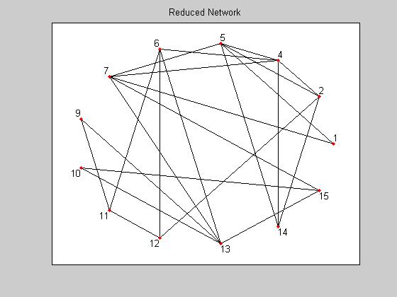
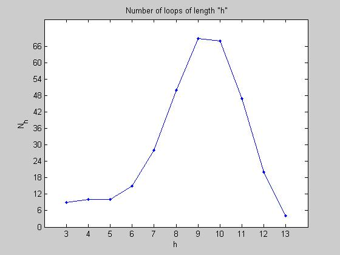

COUNT LOOPS IN A NETWORK
This code counts the number of loops (cycles) in a network (graph) that is composed of nodes and edges. It employs an iterative algorithm that transforms the network into a tree (the ILCA - Iterative Loop Counting Algorithm). This is a "brute force" technique as there are no known (to my knowledge anyway) algorithms for providing a good estimation.
AUTHOR: Joseph Kirk jdkirk630@gmail.com (c) 2007
USAGE: >> run_loops;
NOTES: Refer to the README and the DETAILS files for more info
Contents
- STEP 1: OBTAIN A NETWORK (FROM FILE OR RANDOMLY GENERATED)
- STEP 2: PLOT NET (OPTIONAL)
- STEP 3: REDUCE NET (OPTIONAL)
- STEP 4: SETUP (INITIALIZE THE STARTING NODE)
- STEP 5: COUNT LOOPS (SEARCH THE GRAPH USING THE ILCA)
- STEP 6: PLOT H-LOOPS DISTRIBUTION (NUMBER OF LOOPS OF LENGTH H)
- STEP 7: SAVE THE NET TO A .TXT FILE (OPTIONAL)
- STEP 8: SAVE THE LOOP LIST TO A .TXT OR .MAT FILE (OPTIONAL)
STEP 1: OBTAIN A NETWORK (FROM FILE OR RANDOMLY GENERATED)
Button1 = questdlg('Pick a network type:','Network Type', ... 'Edge List File','Random Network','Edge List File'); switch Button1 case 'Edge List File' % READ NET FROM FILE edge_list = read_edge_list(); % prompt user to select an edge list file if isempty(edge_list) return end usnet = edge_list2net(edge_list); % format the edgelist for the loop counting process net = sort_net(usnet); case 'Random Network' % GENERATE RANDOM NET prompt = {' Enter number of NODES for the random network: ',' Enter number of EDGES for the random network: '}; name = 'Random Network Setup'; answer1 = inputdlg(prompt,name,1,{'15','25'}); if isempty(answer1) return end num_nodes = str2double(cell2mat(answer1(1))); num_edges = str2double(cell2mat(answer1(2))); usnet = gen_rand_net(num_nodes,num_edges); % generate random network net = sort_net(usnet); otherwise return end num_nodes = length(net); num_edges = calc_num_edges(net); disp([' Net: nodes = ' num2str(num_nodes) ' edges = ' num2str(num_edges)]);
The random net was generated after 36 modifications Net: nodes = 15 edges = 25
STEP 2: PLOT NET (OPTIONAL)
Button2 = questdlg('Plot Graph?','Plot Graph','Yes','No','Yes'); switch Button2 case 'Yes' figure; plot_net(net); % plot of the network title('Network'); case 'No' otherwise end
STEP 3: REDUCE NET (OPTIONAL)
Button3 = questdlg('Reduce Network?','Reduce Network','Yes','No','Yes'); switch Button3 case 'Yes' net = reduce_net(net); % removes all 1-connected nodes and their corresponding edges num_nodes = length(net); num_edges = calc_num_edges(net); disp([' Reduced net: nodes = ' num2str(num_nodes) ' edges = ' num2str(num_edges)]); Button4 = questdlg('Plot Reduced Graph?','Plot Graph','Yes','No','Yes'); switch Button4 case 'Yes' figure; plot_net(net); % plot of the reduced network title('Reduced Network'); case 'No' otherwise end case 'No' otherwise end
Reduced net: nodes = 13 edges = 23
STEP 4: SETUP (INITIALIZE THE STARTING NODE)
n = get_starting_node(net); % give the path a nearly optimal starting node path = net(n).node; % initialize the path current_edge = net(n).edges(1); % initialize the first edge loop_list = []; % initialize the loop list iterations = 0; % initialize the number of algorithm steps
STEP 5: COUNT LOOPS (SEARCH THE GRAPH USING THE ILCA)
prompt = {' Approximately how many loops do you expect? (Needed for waitbar progress) '};
name = 'Loop Count (Estimate)';
answer2 = inputdlg(prompt,name,1,{'1000'});
if ~isempty(answer2)
num_est_loops = cell2mat(answer2);
else
return
end
wb = waitbar(0,['Searching Tree for Loops ... ' num2str(0) ' found']);
while (length(path)>1 || ~isempty(current_edge))
[net,path,current_edge,loop_list] = iterate_tree(net,path,current_edge,loop_list);
iterations = iterations+1;
waitbar(length(loop_list)/str2double(num_est_loops),wb,['Searching Tree for Loops ... ' num2str(length(loop_list)) ' found']);
end
close(wb);
num_loops = length(loop_list);
disp([' It took ' num2str(iterations) ' steps to complete the ILCA']);
disp([' There are ' num2str(num_loops) ' loops in the net']);
It took 6865 steps to complete the ILCA
There are 330 loops in the net
STEP 6: PLOT H-LOOPS DISTRIBUTION (NUMBER OF LOOPS OF LENGTH H)
Button5 = questdlg('Show N(h) Distribution?','Loop Distribution','Yes','No','Yes'); switch Button5 case 'Yes' figure; plot_loop_dist(net,loop_list); case 'No' otherwise end
STEP 7: SAVE THE NET TO A .TXT FILE (OPTIONAL)
prompt = {'Enter the name of the file (no file extension):'};
name = 'Save Net to TXT File';
answer3 = inputdlg(prompt,name,[1 50],{'net'});
if ~isempty(answer3)
filename = cell2mat(answer);
net2file(NET,[filename '.txt']);
end
STEP 8: SAVE THE LOOP LIST TO A .TXT OR .MAT FILE (OPTIONAL)
prompt = {'Enter the name of the file (no file extension):'};
name = 'Save Loops to TXT or MAT File';
answer4 = inputdlg(prompt,name,[1 50],{'looplist'});
filename = cell2mat(answer4);
if ~isempty(filename)
Button = questdlg('Choose File Type:','File Type','TXT File','MAT File','TXT File');
switch Button
case 'TXT File'
loops2file(loop_list,[filename '.txt']);
case 'MAT File'
eval(sprintf([filename ' = loop_list;']));
eval(sprintf('save %s %s',filename,filename));
otherwise
end
end